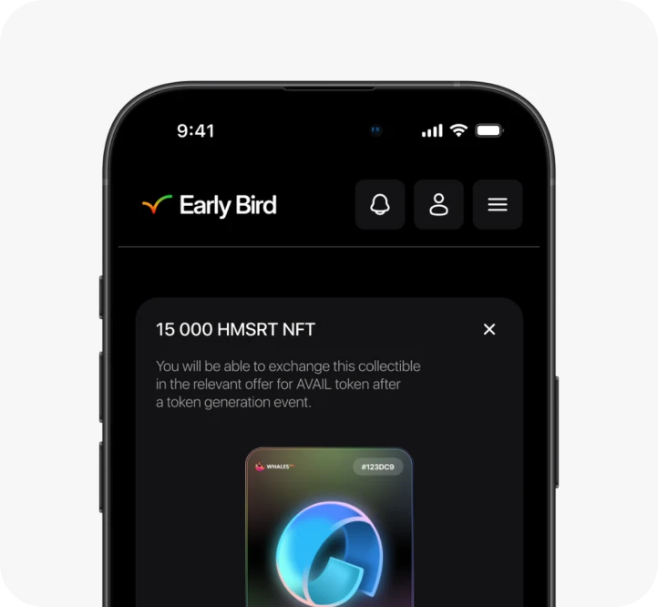
Как мы увеличили завершаемость сделок на 18 п.п
Мои роли в продукте
- Product designer
- UX Researcher
Что такое Early bird?
Early bird — это маркетплейс для торговли токенами новых проектов до их выхода на биржу. Покупатели получают NFT-чеки, которые обмениваются на реальные монеты после запуска проекта, а безопасность сделок гарантируется денежным залогом продавцов.
Что я решал?
- Снизить нагрузку на службу поддержки на 20–25%
- Повысить конверсию в успешное завершение сделки на 15 п.п
- Увеличить эффективность реферальной системы с 3 до 8–15%
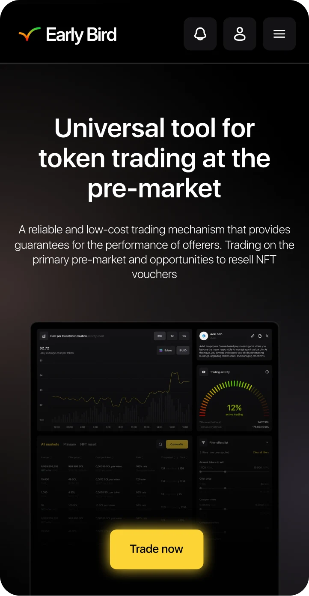
Сразу про результаты
+18п.п к завершаемости сделок
− 23% обращений в поддержку
Увеличили Referral Contribution Share c 3% до 9%
Брейншторм с командой
Мы провели брейншторм с командой и набросали потенциальные проблемы, решив которые мы сможем повлиять на целевые метрики.
- Оптимизировать информационную архитектуру карточки, выведя ключевые метрики на неё и ускорить поиск целевых сделок
- Реструктурировать систему вознаграждений через внедрение геймификации и уровней для целевого роста метрики Referral Contribution Share.
Далее мы решили запросить данные у аналитика, чтобы подтвердить проблемы и понять, что мы и не выдумали.
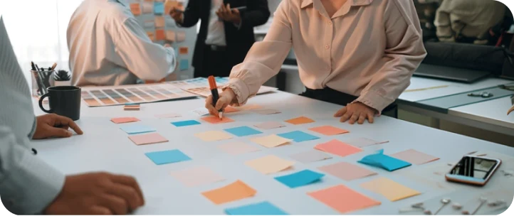
Анализ данных
Изучив данные, мы поняли, что некоторые наши мысли были ошибочными и проблема крылась в другом.
Мы выявили
- 01 Конверсия в переход в сделку 63%, а вот завершаемость сделок 13%
- 02 Referral Contribution share составляет 3%
Опираясь на эти данные, мы поняли, что проблема возникает не в создании сделки, а в процессе её проведения. А вот Referral Contribution Share на уровне очень низкий показатель, так как изучив открытые данные средний показатель по индустрии на уровне 8–15%.
Фидбэк от юзеров
Далее мы решили обратиться в службу поддержки и узнать топ проблем, с которыми приходят юзеры.
Из фидбэка мы выявили следующее
- 01 Одной из самых главных проблем оказалось, что юзеры не понимают какой статус у сделки и что будет происходить дальше — поэтому они либо обращаются в поддержку, либо завершают сделку
- 02 Юзеры часто спрашивают поддержку о том, меняется ли процент реферальных бонусов в зависимости от кол-ва приведённых
- 03 Ещё одним из частых запросов от пользователей был вопрос о наличии обучающих материалов, так как им страшно заходить в сделки из-за боязни ошибок
Отзывы пользователей подтверждают статистические данные:
- Юзеры не понимают, как проходят сделки
- Юзеры не понимают, на каком этапе они находятся, и боясь потерять свои деньги выходят из сделки
- Юзеры не вовлечены в реферальную программу и не понимают свою потенциальную выгоду от привлечения большего количества рефералов
Составление гипотез
Гипотеза №1 — Динамический прогрессбар и описание шагов
Мы предполагаем, что добавление описания под каждым шагом и динамического прогрессбара увеличит количество завершённых сделок на 12–15%, потому что решит проблему непонимания следующих шагов и боязни допустить ошибку.
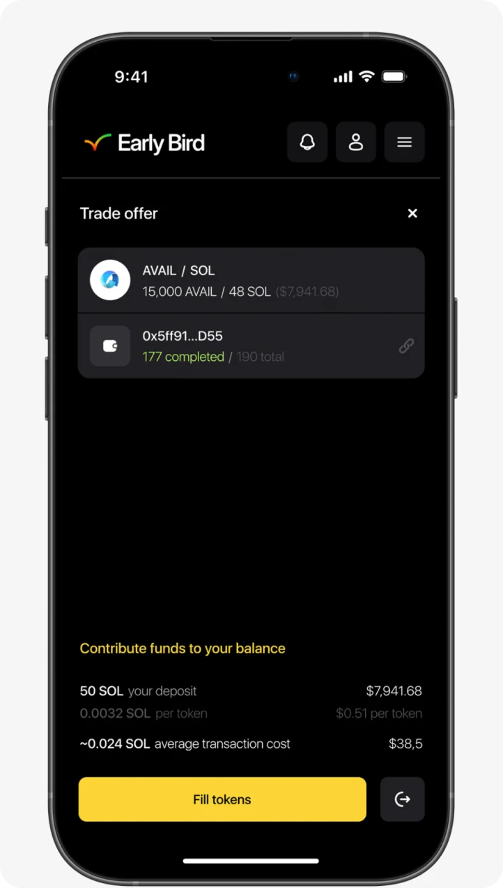
Гипотеза №2 — Обучение сделкам
Мы предполагаем, что добавив экран с объяснением процесса сделки перед ней мы уменьшим количество прерванных сделок на X%, так как решим проблему боязни допустить ошибку в процессе сделки.
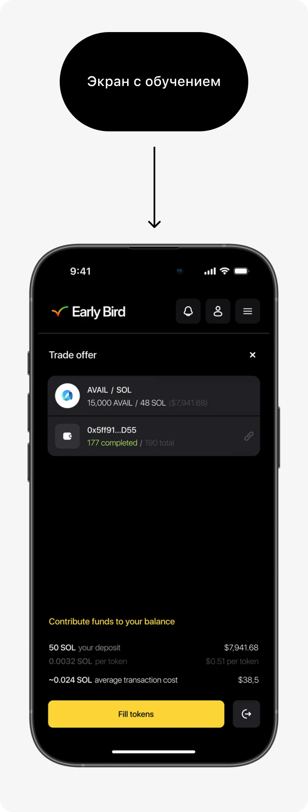
Гипотеза №3 — Вовлечение в реферальную программу
Мы предполагаем, что добавление кнопки info с подробным описанием уровней реферальной программы и динамической шкалы прогресса увеличит Contribution Share Rate на 5–9%, так как решит проблему низкой вовлечённости пользователей.
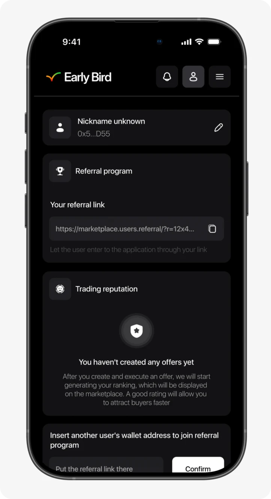
Гипотеза №4 — Добавление раздела обучения
Мы предполагаем, что добавление раздела с обучающими материалами на платформу уменьшит количество обращений в поддержку на X%, так как решит проблему непонимания функционала платформы.
Приоритизация
После дискавери и составления всех гипотез, я приоритизировал все гипотезы по шкалам: полезность, уверенность, лёгкость в разработке, чтобы понять какие гипотезы стоит взять в работу в первой итерации, а от каких вообще можно отказаться.
| Гипотеза | Метрика | Impact | Confidence | Ease | Score |
|---|---|---|---|---|---|
| Динамический прогрессбар и описание шагов | Количество завершённых сделок | 10 | 10 | 8 | 800 |
| Обучение сделки перед её началом | Количество завершённых сделок | 10 | 8 | 8 | 640 |
| Вовлечение в реферальную программу | Contribution Share Rate | 9 | 8 | 8 | 576 |
| Добавление раздела обучения | Количество обращений в поддержку | 7 | 7 | 5 | 245 |
Скоупинг
После приоритизации, все гипотезы я обсудил с менеджером. В итоге мы отказались от 1 из гипотез из-за того что не уверены в ней и она достаточно тяжела в реализации так как нужно привлекать много ресурсов.
Добавление раздела обучения на платформу
HI-FI дизайн
После скоупинга, я спроектировал UI-kit и приступил к проектированию.
Проектирование динамического прогрессбара с описанием шагов:
Перед тем как начать проектирование собственных макетов мы предварительно провели бенчмаркинг конкурентов в такой же нише, чтобы понять как такую же проблему решают наши конкуренты.
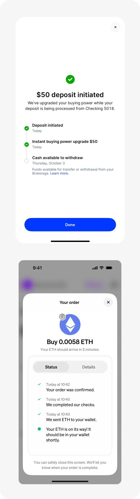
Мы решили разделить в нашем интерфейсе шаги от описания шагов чтобы не создавать высокую когнитивную нагрузку на пользователя, но чтобы на экране была вся нужная информация, необходимая для решения задачи.
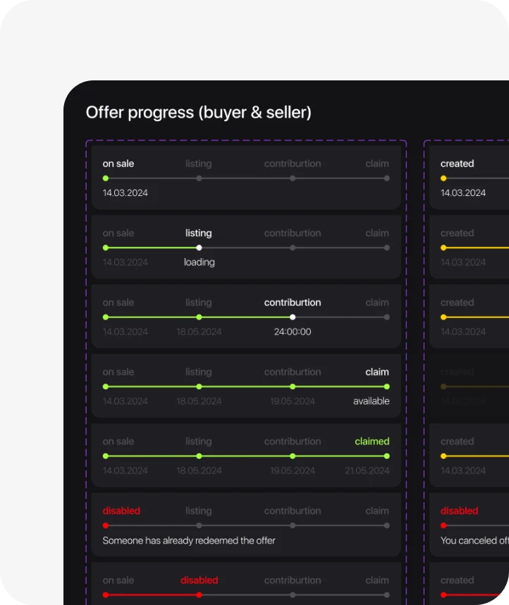
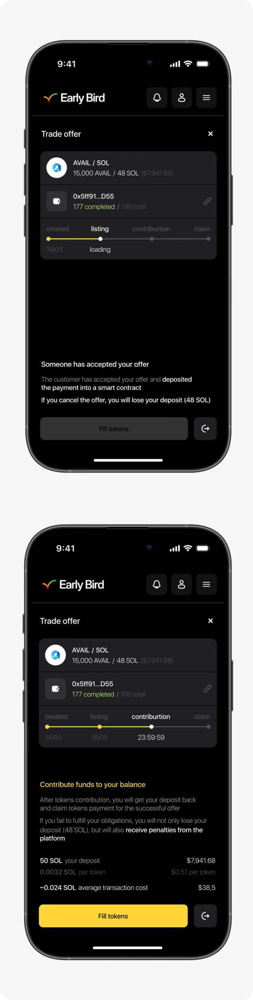
Предобучение перед сделкой
Чтобы не перегружать пользователя теорией, мы упаковали весь процесс в 4 простых шага на одном экране. Это помогает мгновенно считать флоу сделки — от выбора токена до получения профита. Такое решение снимает барьер перед «сложным блокчейном» и делает путь пользователя понятным и предсказуемым с первой секунды.
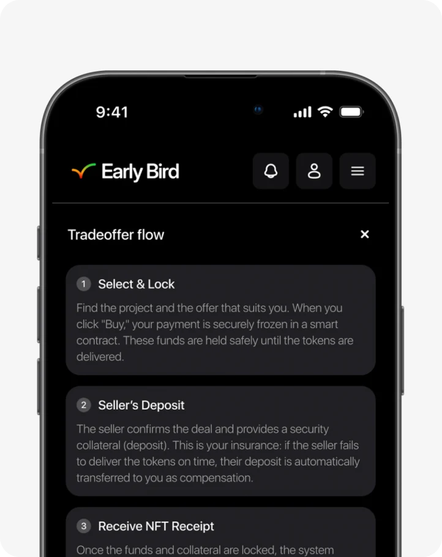
Проектирование реферальной программы:
Чтобы решить проблему низкого Conversation Share Rate мы также провели бенчмаркинг конкурентов, но здесь важно было найти реферальные программы с такой же уровневой логикой.
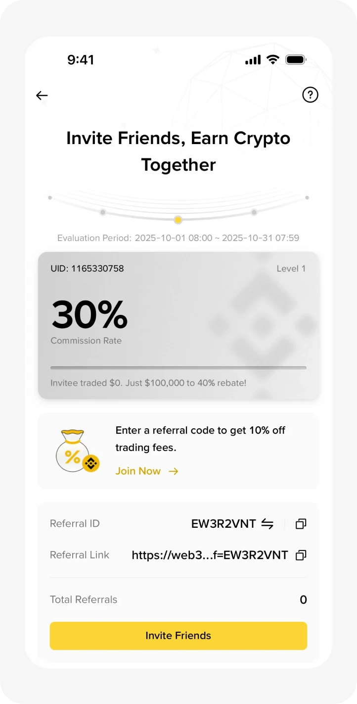
Изучив возможные варианты мы решили использовать более эмоциональный дизайн, выделив не просто уровни реферальной программы, а сделав статусы: бронзовый / серебряный / золотой и бриллиантовый. По нашему мнению это способствует большему вовлечению пользователей за счёт элементов геймификации.
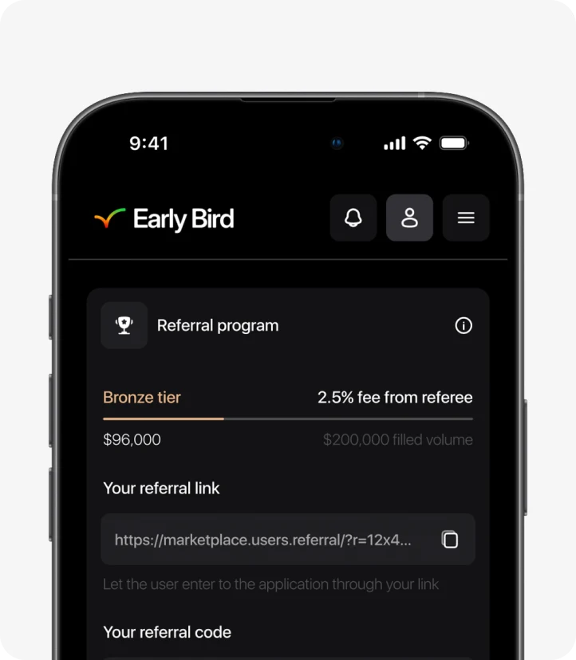
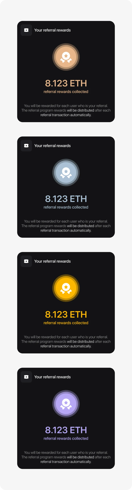
Также была добавлена кнопка инфо, чтобы пользователь мог в любой момент ознакомиться с условиями и уровнями реферальной программы.
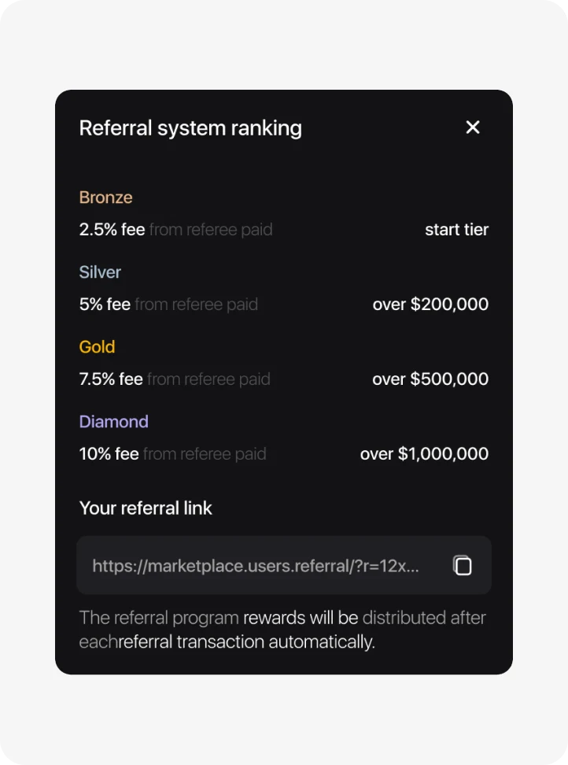
Валидация через A/B тест
Все предложенные решения были направлены на A/B тестирование. Мы разделили пользователей на две группы, чтобы сравнить показатели старой и новой версий в реальных условиях. Это позволило объективно оценить влияние дизайна на метрики и подтвердить эффективность макетов реальными данными перед финальным релизом.
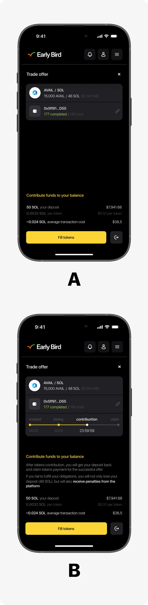
Результаты
Contribution Share rate вырос с 3% до 7%
Количество обращений в поддержку уменьшилось на 14%
Количество завершённых сделок увеличилось на 2 п.п
Первые результаты A/B теста показали рост Referral Contribution Share на 4 п.п. и значительное снижение нагрузки на поддержку — на 19%. Однако ключевой показатель, завершаемость сделок, вырос всего на 2 п.п., что не соответствовало нашим целям🤔
Доработка решений
Поиск причины
Аналитика показала аномалию: 83% пользователей закрывали экран предобучения в первую же секунду. Чтобы разобраться в причинах, мы провели серию коротких проблемных интервью с пользователями, которые проигнорировали обучение.
Инсайт
Пользователи мгновенно считывали статичные плашки как «информационный мусор» или рекламный барьер. Они воспринимали этот экран как бесполезный шум и закрывали его на автомате, даже не пытаясь вникнуть в содержание.
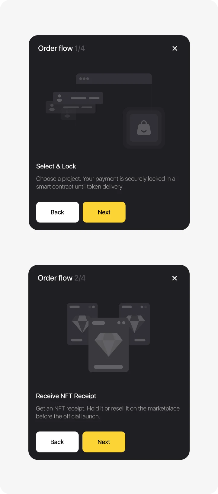
Релиз и сбор данных
Contribution Share rate вырос с 3% до 9%
Количество обращений в поддержку уменьшилось на 23%
Количество завершённых сделок увеличилось на 14 п.п
Моя роль
- Дискавери, проведение удалённых и полевых исследований
- Составление гипотез
- Приоритизация гипотез и скоупинг совместно с менеджером
- Hi-Fi дизайн, анимации и прототипирование
- Коллаборация с QA при тестировании
- Дизайн-ревью перед релизом
- Тестирование и сбор результатов после релиза